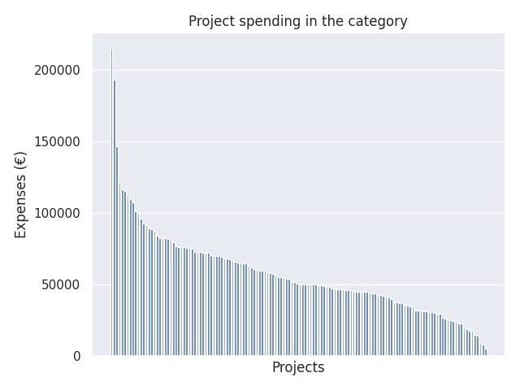

Opetustoimen ja varhaiskasvatuksen henkilöstökoulutus 2016
Category summary
58K spent on average
215K highest spending

Reports in the category
Niilo Mäki Instituutti
Project name: Oppimisen ja hyvinvoinnin kokonaisvaltainen tuki erilaisille oppijoille
215K spent
Jyväskylän kaupunki, Sivistyksen toimiala, Varhaiskasvatus ja perusopetus
Project name: Koulussa digittää - Yhteisöllistä ja kestävää täydennyskoulutus Keski-Suomessa
193K spent
Suomen Kuntaliitto ry.
Project name: Sivistystoimen huippujohtajaohjelma 2
146K spent
Haaga-Helia Ammatillinen opettajakorkeakoulu
Project name: Näyttötutkintomestarikoulutus
122K spent
Jyväskylän yliopisto, Kokkolan yliopistokeskus Chydenius
Project name: Minustako rehtori
116K spent
Haaga-Helia Ammatillinen opettajakorkeakoulu
Project name: TUTKEsta toimintaan II
115K spent
Oulun ammattikorkeakoulu Oy Ammatillinen opettajakorkeakoulu
Project name: Näyttötutkintomestarikoulutus
112K spent
Pro Practica Oy
Project name: Kehittämiskouluverkosto 1 Jatko
110K spent
Hämeen ammattikorkeakoulu Oy
Project name: Mestariainesta! Näyttötutkintomestariksi HAMKista, Näyttötutkintomestarin koulutusohjelma 25 op
107K spent
Turun kaupunki, sivistystoimiala, Turun ammatti-instituutti aikuiskoulutus
Project name: Digiroihu
101K spent
Jyväskylän ammattikorkeakoulu, ammatillinen opettajakorkeakoulu
Project name: Näyttötutkintomestarikoulutus
100K spent
Suomen ympäristöopisto SYKLI
Project name: Ammattilaisen kädenjälki - ympäristöosaamisen tunnistaminen, hankkiminen ja arviointi
96.1K spent
Niilo Mäki Instituutti
Project name: Yhteispeli - hyvinvointia ja taitoja koko koululle
92.7K spent
Suomen Mielenterveysseura ry
Project name: Lapsen mielenterveyden edistäminen varhaiskasvatuksessa -hanke
91.7K spent
Turun yliopisto
Project name: Osaamisperusteisuus ja yrittäjyyskasvatus ammatillisessa koulutuksessa
89.1K spent
Hämeen ammattikorkeakoulu Oy
Project name: TUTKESTA toimintaan II
89K spent
Innokas-verkosto, Helsingin yliopiston opettajankoulutuslaitos
Project name: Ohjelmoinnin opettajaksi MOOC-verkkokurssilla
87.8K spent
Tampereen ammattikorkeakoulu Oy
Project name: TUTKESTA toimintaan II
83.9K spent
Centret för livslångt lärande vid Åbo Akademi och Yrkeshögskolan Novia
Project name: Leadership matters-rektorer
82.7K spent
Jyväskylän ammattikorkeakoulu, ammatillinen opettajakorkeakoulu
Project name: Kohti digitaalista opettajuutta
82.7K spent
Jyväskylän ammattikorkeakoulu, ammatillinen opettajakorkeakoulu
Project name: TUTKEsta toimintaan II
82.6K spent
Teatteriyhdistys Pensas ry
Project name: NYT! – Draama oppimisen avuksi kouluihin 2016–2017
81.8K spent
Toimihenkilöjärjestöjen Opintoliitto ry / Helsingin aikuisopisto
Project name: Aikuisten maahanmuuttajien luku- ja kirjoitustaidon opettajaksi valmentava koulutus
80.7K spent
Suomen ympäristöopisto SYKLI
Project name: Kaupunkisuunnittelu laaja-alaisen oppimisen innoittajana II
79.8K spent
Oulun ammattikorkeakoulu Oy/Ammatillinen opettajakorkeakoulu
Project name: TUTKESTA toimintaan ll
77K spent
Matemaattisten Aineiden Opettajien Liitto, MAOL ry
Project name: Ohjelmointi ja koodaus peruskoulun matematiikassa
76.3K spent
Tampereen ammattikorkeakoulu Oy
Project name: Moninaisuusosaaja
76.3K spent
Tampereen ammattikorkeakoulu Oy
Project name: Näyttötutkintomestarin koulutusohjelma 25 op
76.2K spent
Suomen Mielenterveysseura
Project name: Hyvää mieltä yhdessä -hanke 2016-2017
75.8K spent
Metropolia Ammattikorkeakoulu Oy
Project name: SÄPE - Säveltämisen pedagogiikan koulutus- ja kehittämishanke
75.7K spent
Oulun Ammattikorkeakoulu Oy, Ammatillinen opettajakorkeakoulu
Project name: OsaOppi IV - Yhteisöllinen ohjaus ja digiosaamismerkit
75K spent
Oulun ammattikorkeakoulu Oy Ammatillinen opettajakorkeakoulu
Project name: JOHTO -Johtaminen muutoksessa
73K spent
Suomen Rehtorit ry
Project name: Rehtorin ammattivalmennus
72.9K spent
Haaga-Helia Ammatillinen opettajakorkeakoulu
Project name: ESSI - Esteetön ja digitaalinen kansalaisopisto
72.7K spent
Oulun ammattikorkeakoulu Oy/Ammatillinen opettajakorkeakoulu
Project name: Työelämäpedagogiikka
72.5K spent
Haaga-Helia Ammatillinen opettajakorkeakoulu
Project name: Tahtoa ja taitoa tasa-arvoon
72.4K spent
Otavan Opisto / Mikkelin kaupunki
Project name: Koulutuskeskiviikot
72.1K spent
Opettajankoulutuslaitos, Helsingin yliopisto
Project name: Lukioiden kehittyvä ja sähköistyvä arviointikulttuuri – Arviointi aktiivisen ja tavoitteellisen oppimisen tukena
70.8K spent
Turun yliopisto (Opettajankoulutuslaitos, Rauman yksikkö)
Project name: VäKä - Välineitä käsityönopetuksen muutokseen
70.2K spent
Oulun ammattikorkeakoulu Oy/Ammatillinen opettajakorkeakoulu
Project name: KEHTO – kehitämme toimintaa!
70K spent
Laurea-ammattikorkeakoulu Oy
Project name: LETET - Lähihoitajan ennakoiva turvallisuus-, ergonomia- ja työhyvinvointiosaaminen
69.9K spent
Turun kaupunki, TOP-keskus
Project name: Open merkit - yksilöllinen osaamisen kehittäminen ja sen näkyväksi tekeminen
69.3K spent
Oulun yliopisto, Täydentävien opintojen keskus
Project name: Johtamisen taitoja - Itsensä johtamista ja hyviä käytänteitä arkeen
68.4K spent
HY+ Oy
Project name: Tunnista hyvä – Kotitalousopetus ja erityisen tuen tarvitsijat
68.3K spent
Metropolia Ammattikorkeakoulu
Project name: Rakentamisen tietomallien (BIM) -perusteet ammattioppilaitosten opettajille
68K spent
Matemaattisten Aineiden Opettajien Liitto, MAOL ry
Project name: Tieto- ja viestintäteknologian pedagoginen hyödyntäminen matematiikassa, fysiikassa ja kemiassa
66.7K spent
Jyväskylän ammattikorkeakoulu, ammatillinen opettajakorkeakoulu
Project name: Sparraamalla paremmaksi osaajaksi - Erityinen tuki ammatillisessa aikuiskoulutuksessa
66.2K spent
HY+ Oy
Project name: DigiKehittäjäopettaja
65.6K spent
Oulun yliopisto, Täydentävien opintojen keskus (TOPIK)
Project name: Askelmerkit digiloikkaan
65.5K spent
Centret för livslångt lärande vid Åbo Akademi och Yrkeshögskolan Novia
Project name: Vägkost - plan för småbarnspedagogik 2017
65K spent
HY+ Oy
Project name: Mobiililoikka leikkiin
64.9K spent
Oulun ammttikorkeakoulu Oy/Ammatillinen opettajakorkeakoulu
Project name: POKA ll - Perehdy, opi, kehitä –arvioi!
63K spent
Taideyliopisto
Project name: Digitarina laaja-alaisen osaamisen ja monilukutaidon välineenä
62.3K spent
Hämeen ammattikorkeakoulu Oy
Project name: Erityisen tuen ja ohjauksen osaajaksi
60.9K spent
Jyväskylän ammattikorkeakoulu, ammatillinen opettajakorkeakoulu
Project name: Opesta ohjaajaksi - opettaja opiskelijan toimijuuden tukena
60.8K spent
Metropolia Ammattikorkeakoulu Oy
Project name: DigiSoTeOpe - Sosiaali- ja terveysalan opettajien täydennyskoulutus (10 op)
60.1K spent
PRO koulutus ja konsultointi Oy
Project name: COACHAAVA PEDAGOGINEN JOHTAJA
60K spent
Finnoschool oy
Project name: ProPedagogy2025 - käänteisellä pedagogiikalla kohti yksilöllistä oppimista
60K spent
Turun yliopiston koulutussosiologian tutkimuskeskus
Project name: DigiKick
58.7K spent
Tampereen ammattikorkeakoulu Oy
Project name: Hanskaatko – kohti parempia opiskelija- ja opettajakokemuksia
58.1K spent
HY+ Oy
Project name: Yhdenvertainen seksuaalikasvatus opetus- ja ohjaustyössä 8op
57.3K spent
Haaga-Helia Ammatillinen opettajakorkeakoulu
Project name: DigiOstu - maahanmuuttajien osaamisen tunnistaminen
57.1K spent
Centret för livslångt lärande vid Åbo Akademi och Yrkeshögskolan Novia
Project name: Förmåga att tänka och lära sig - kompetenser för elever och lärare
55.1K spent
Centret för livslångt lärande vid Åbo Akademi och Yrkeshögskolan Novia
Project name: Ledarskap inom småbarnspedagogik och förskoleundervisning, 25 sp
55K spent
Centret för livslångt lärande vid Åbo Akademi och Yrkeshögskolan Novia
Project name: DigiPrep - Inspirera till pedagogisk digital kompetens
55K spent
Haaga-Helia Ammatillinen opettajakorkeakoulu
Project name: Taidolla Duuniin
54.2K spent
Jyväskylän ammattikorkeakoulu, Ammatillinen opettajakorkeakoulu
Project name: Tunne-, turva- ja sosiaaliset taidot oppimisen, pitkäjänteisen yhteistyön ja kotoutumisen tukena
54K spent
Jyväskylän yliopisto, Koulutusjohtamisen instituutti
Project name: Minustako päiväkodin johtaja? -Päiväkodin johtajan työhön valmentava koulutus
52.6K spent
Jyväskylän yliopisto, Koulutusjohtamisen instituutti
Project name: Minustako rehtori? Rehtorin tehtäviin valmentava koulutus
51.7K spent
HY+ Ab
Project name: Specialpedagogik för yrkeslärare
50.7K spent
Helsingin yliopisto, Opettajankoulutuslaitos
Project name: Vatti K. Vaativa erityinen tuki kehittyy
50.4K spent
Itä-Suomen yliopisto
Project name: Taitoja tulevaan elämään
50.2K spent
Lappeenrannan kaupunki/Saimaan mediakeskus
Project name: OHO - Opetussuunnitelman haasteet opettajille
50.2K spent
Tampereen yliopisto
Project name: Vasu käytäntöön varhaiskasvatuksen jaetulla johtajuudella
50.1K spent
Jyväskylän yliopisto, Kokkolan yliopistokeskus Chydenius
Project name: Valmentava ja osallistava johtaminen -verkostohanke
50.1K spent
Lapin yliopisto, Koulutus- ja kehittämispalvelut
Project name: Ekaloikka
50.1K spent
Finnoschool oy
Project name: ME - monilukutaidosta elämys
50K spent
Jyväskylän ammattikorkeakoulu, Ammatillinen opettajakorkeakoulu
Project name: Moninaisuuden kohtaaminen ja johtaminen
49.6K spent
Turun yliopisto (Opettajankoulutuslaitos, Rauman yksikkö)
Project name: Osaamista kulttuurisesti moninaiseen kouluun ja päiväkotiin
49.4K spent
Centret för livslångt lärande vid Åbo Akademi och Yrkeshögskolan Novia
Project name: Multimodalt arbete i en ämnesövergripande verksamhetskultur
49.1K spent
HY+ Oy
Project name: Sanahanat auki monilukutaitoon
48.6K spent
Metropolia Ammattikorkeakoulu Oy
Project name: Kestävä tulevaisuus ja monialainen oppiminen
48.2K spent
Svenska Österbottens förbund för utbildning och kultur skn
Project name: Examensmästare 2016 och Vuxenutbildningskonferens 2017
47.3K spent
Turun yliopisto
Project name: SCHOLAE FUTURUM - digitaalinen oppiminen, oppimisympäristöt ja toimintakulttuuri tulevaisuuden lukiossa
47.1K spent
Tampereen ammattikorkeakoulu Oy
Project name: AmisTurvis - turvallisuus kuuluu kaikille!
47K spent
Bildningsalliansen rf
Project name: Fri bildning-Dela och Lär
46.9K spent
Oulun yliopisto, Täydentävien opintojen keskus
Project name: Teknologiataidoista laaja-alaista osaamista varhaiskasvatukseen
46.5K spent
Lapin yliopisto / Koulutus- ja kehittämispalvelut
Project name: KOHO - Kohti oppimista, kotoutumista ja kasvua
46.5K spent
HY+ Oy
Project name: Voimaa ohjaukseen ja opetukseen!
46.4K spent
Kokkolan kaupunki
Project name: Lukion opettajuus päivittyy ohjaamaan tulevaisuuden osaamiseen
46.4K spent
HY+ Oy
Project name: Sovitteleva ja restoratiivinen oppimisyhteisö - menetelmiä koulurauhan edistämiseen ja kohtaamisen kulttuuriin
45.3K spent
Centret för livslångt lärande vid Åbo Akademi och Yrkeshögskolan Novia
Project name: Att bemöta, motivera och undervisa elever med behov av särskilt stöd
45.1K spent
Itä-Suomen yliopisto / Aducate
Project name: Maahanmuuttajalapset varhaiskasvatuksessa
45K spent
Centret för livslångt lärande vid Åbo Akademi och Yrkeshögskolan Novia
Project name: Det nya gymnasiet - en fortsättning
45K spent
Oulun ammattikorkeakoulu Oy Ammatillinen opettajakorkeakoulu
Project name: Yhdessä yhteisötakuuseen!
45K spent
Oulun yliopisto, Täydentävien opintojen keskus
Project name: Koko koulu kotouttaa
44.9K spent
Jyväskylän yliopisto, Kokkolan yliopistokeskus Chydenius
Project name: Päivitetään Porukalla! Osaavista opettajista Group Trainereiksi
44.6K spent
Jyväskylän yliopisto, Koulutusjohtamisen instituutti
Project name: Critical Friends - rehtorit ja yritysjohto yhdessä
44.2K spent
Metropolia Ammattikorkeakoulu
Project name: Open ohjelmointi
44.1K spent
HY+ Ab
Project name: De otroliga åren – att stöda barnets emotionella och sociala kompetens
43.2K spent
AP Haglund Oy / Amazement
Project name: Kaikki kuvaa EDU: esiopetus
42.7K spent
HY+ Oy
Project name: Uudet ja sähköiset arviointikäytännöt
42.3K spent
Pesäpuu ry
Project name: Sisukkaasti koulutiellä - sijoitetun lapsen monialainen tuki
41.9K spent
Kokkolan kaupunki
Project name: Pedagoginen osaaminen uudistuvassa varhaiskasvatuksessa
41.2K spent
Lapin yliopisto, KTK, Opetus- ja kasvatusalan täydennyskoulutusyksikkö
Project name: Erityiset haasteet esiopetuksessa ja varhaiskasvatuksessa
40K spent
Suomen Kansanopistoyhdistys-Finlands Folkhögskolförening ry
Project name: ”Kansanopiston johtaminen on erilaista” - Kansanopistojohtamisen koulutusohjelma
37.7K spent
Tampereen ammattikorkeakoulu Oy
Project name: Pettu - oppilaitosten välijohtajat puun ja kuoren välissä
37.4K spent
Hämeen ammattikorkeakoulu Oy
Project name: Koodausta kouluarkeen
37.4K spent
Centret för livslångt lärande vid Åbo Akademi och Yrkeshögskolan Novia
Project name: Interkulturell kompetens och språkutvecklande arbetssätt
37.3K spent
Metropolia Ammattikorkeakoulu Oy
Project name: Digiosaaminen haltuun ammatillisessa koulutuksessa
36K spent
Ilona IT Oy
Project name: Strateginen loikka - ST
35.5K spent
Turun yliopiston Brahea-keskus
Project name: Oikeudenmukainen laadullinen arviointi oppimisen edistäjänä
35.1K spent
Mediakasvatusseura ry
Project name: MEMO2 - Mediapolulta monilukutaitoa
34.6K spent
Suomen eOppimiskeskus ry
Project name: Open Päivitys 6 - Audiovisuaalinen osaaminen
32.3K spent
Hämeen ammattikorkeakoulu Oy
Project name: Henkilökohtaista
31.8K spent
Kansanvalistusseura / Etäkoulu Kulkuri
Project name: Case Forest: metsä monialaisena oppimiskokonaisuutena
31.7K spent
Tampereen yliopisto
Project name: Tavoitteena kestävästi monikulttuurinen ja moniarvoinen koulu (18op)
31.6K spent
Tampereen kesäyliopistoyhdistys ry
Project name: Valmiuksia ja osaamista valmistavaan opetukseen
31.4K spent
Diakonia-ammattikorkeakoulu Oy (Diak)
Project name: Kulttuurien ja uskontojen välinen vuorovaikutus oppilaitoksissa (5op)
31.1K spent
Itä-Suomen yliopisto / Aducate
Project name: Kasva johtajana
30.7K spent
Tampereen kaupunki - Tampereen seudun ammattiopisto
Project name: Muuttuva pedagogiikka - työkaluja muuttuvaan ja monimuotoiseen opettajuuteen
30.5K spent
Lapin yliopisto / Koulutus- ja kehittämispalvelut
Project name: Lukioiden sähköiset oppimisalustat käyttöön 10 op
30K spent
Lapin yliopisto / Koulutus- ja kehittämispalvelut
Project name: Tieto-ja viestintätekniikka vapaan sivistystyön opetuksen ja työn välineenä 12 op
29.9K spent
Tampereen yliopisto
Project name: Monilukutaito laaja-alaisena osaamisena uusissa oppimisympäristöissä
27.1K spent
Tampereen yliopisto
Project name: Omin sanoin - kielentäminen matematiikassa ja äidinkielessä (4 op)
26.2K spent
Ilona IT Oy
Project name: Mobiilitotaali-MOTO
25.6K spent
Centret för livslångt lärande vid Åbo Akademi och yrkeshögskolan Novia
Project name: RC-insatser för modern naturvetenskap i skolan
25K spent
Metropolia Ammattikorkeakoulu Oy
Project name: Digimarkkinointiosaamista ammatilliseen koulutukseen
24.9K spent
Turun ammattikorkeakoulu Oy
Project name: Ratkaisukeskeinen toimintatapa turvallisuusosaamisen edistäjänä kouluyhteisössä
24K spent
Hämeen ammattikorkeakoulu Oy
Project name: mOPO ei karkaa käsistä
23.1K spent
Lapin yliopisto / Koulutus- ja kehittämispalvelut
Project name: Vastuullisesti ja turvallisesti digiajassa
23K spent
Turun yliopisto (Opettajankoulutuslaitos, Rauman yksikkö)
Project name: Rohkaisua ja menetelmiä 6. luokan ruotsin kielen opetukseen
20.2K spent
Turun yliopisto (Opettajankoulutuslaitos, Rauman yksikkö)
Project name: Vertaisryhmämentorointi varhaiskasvatuksen kehittäjänä
18.8K spent
Aikuis- ja täydennyskoulutuspalvelut AIKOPA
Project name: Lapsen osallisuuden vahvistaminen varhaiskasvatuksessa
17.7K spent
Turun yliopisto (Opettajankoulutuslaitos, Rauman yksikkö)
Project name: ELÄINTARINOITA - Oppimassa eläinten kanssa
17.7K spent
Lapin yliopisto / Koulutus- ja kehittämispalvelut
Project name: Tehemä pois II - ilmiöistä yrittäjyyttä
15K spent
Sydkustens landskapsförbund r.f.
Project name: ”En bättre miljö – ett bättre dagis”. Piloten för processinriktad fortbildning av daghemspersonal
14.7K spent
Metropolia Ammattikorkeakoulu Oy
Project name: Seksuaalisen häirinnän ennaltaehkäisy ammatillisissa oppilaitoksissa, 5 op
9.09K spent
Jyväskylän yliopiston kielikampus
Project name: Monessa kielessä monella tavalla - näkökulmia kielitietoiseen kielikoulutukseen
8.17K spent
Ekvalita
Project name: Osallistava ja oikeudenmukainen koulua - En mera inkluderande och rättvis skola
5.29K spent